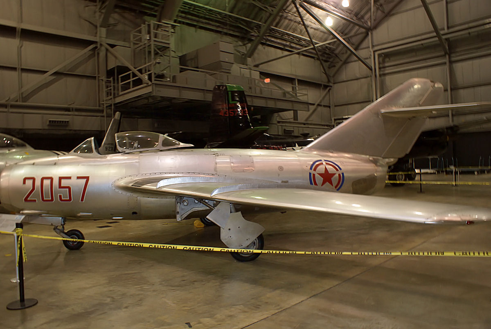

검수 진행 중 · 브라우저 비행 검수 미완료
동일한 카메라로 맞춘 실제 박물관 사진과 게임 모델입니다. 사진과 모델을 늘리거나 변형하지 않고 카메라 위치·방향·초점거리만 조절했습니다. 사진의 도색과 게임의 창작 도색은 다릅니다.

사진: Valder137, 2009-09-26 · 원본 및 저작자 정보 · CC BY 2.0. 원본은 변경하지 않았으며 게임 렌더를 별도 층으로 겹칩니다.
| 부품 | 현재 증거 / 수정 | 남은 확인 |
|---|---|---|
| 동체·꼬리 | 겹침 비교 후 동체 길이, 수직꼬리 위치·후퇴각과 수평꼬리 위치 수정 | 수동 기준점 오차와 렌즈·가림의 영향이 남음 |
| 주익·조종면 | 하반각 약 2°, 후퇴한 조종면 회전축 수정, 별 표식이 에일러론과 함께 움직이도록 분할 | 현재 겹침에서 가까운 주익 윤곽과 후연이 사진보다 아래로 벗어남. 카메라와 날개 형상을 분리해 재검증 필요 |
| 흡입구·기관포 | 열린 원형 덕트·중앙 분리판, 후퇴된 입구 12개 광선 검사, 기관포 3개 | 이 두 사진에서는 입구 깊이를 판단할 수 없음. 정면 렌더와 사진 대조 필요 |
| 배기구·엔진 | VK-1 고정 단면 배기구, 애프터버너·추력 편향 없음. 출력별 상태 렌더 보존 | 브라우저에서 내부 깊이·재질과 출력 변화 확인 |
| 캐노피·착륙장치 | 사진의 열린 캐노피에 맞춰 슬라이딩 상태로 겹침. 기어·도어 애니메이션 구현 | 겹침에서 바퀴 위치와 캐노피 프레임 차이가 보임. 기어 높이·캐노피 곡률 재검수 필요 |
| 에어브레이크·손상 | 별도 후방 브레이크, 조종면 변위 및 파손·그을음 상태 렌더 보존 | 실제 게임에서 작동·파손 전환 확인 |
게임의 기하와 재질 셰이더를 EGL llvmpipe에서 렌더했습니다. 실제 WebGL 게임 화면, 하드웨어 FPS 측정 또는 최종 시각 승인으로 간주하지 않습니다. 손으로 고른 기준점과 가려진 부품 때문에 잔차가 남아 있으며 RMS 값은 제작 허용오차가 아닙니다. 후측면 기준점 RMS는 약 20.0 px입니다.
47,490 삼각형 · 85 메시 · 기하 데이터 1,457,800 바이트 · 추가 기체 이미지 텍스처 없음. 공유 장면 자원은 제외했습니다.
카메라·기준점별 오차·상태 렌더·검사 기록 · 편집 가능한 소스와 출처·라이선스.jpg){kind=link}